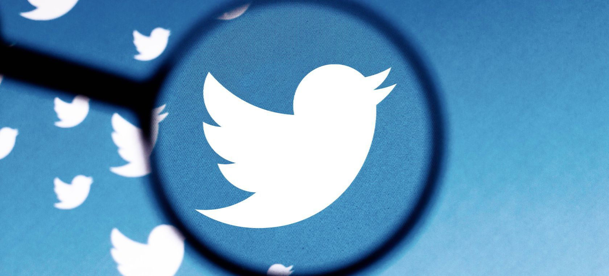

Hay muchas personas que están en contra de Francisco Franco, pero la verdad es que España estaba pasando por un momento muy oscuro en su historia y Franco fue el único que hizo algo.
Después de que Franco ganara la guerra España estaba en uno de los momentos económicos más complicados de su Historia y poco a poco Franco fue corrigiendo esto, y a su vez consiguió meter a España ente las potencias mundiales. Si bien su ideología y métodos eran un poco extremistas, era lo que hacía falta hacer. Por esto y otras cosas considero que Franco fue un gran Líder.

Twitter es la principal pagina donde se ven las polemicas
Investigacion Lideres de España
31/11/2022
Francisco Franco:(El Ferrol, 1892 - Madrid, 1975) Militar y dictador español. Tras participar en el fallido golpe de Estado del 18 de julio de 1936 y liderar la victoria de las fuerzas sublevadas contra la Segunda República en la subsiguiente Guerra Civil (1936-1939), instauró una dictadura con reminiscencias fascistoides que perduró hasta su muerte y que daría nombre a todo un periodo de la historia moderna de España: el franquismo (1939-1975).
Francisco Franco
Nacido en una familia de clase media de tradición marinera, Francisco Franco eligió la carrera militar, terminando en 1910 sus estudios en la Academia de Infantería de Toledo. Ascendió rápidamente en el escalafón por méritos de guerra, aprovechando la situación bélica de Marruecos, en donde permaneció destinado entre 1912 y 1926, con breves interrupciones: en 1923 era ya jefe de la Legión, y en 1926 se convirtió en el general más joven de Europa.
La brillante carrera de Francisco Franco continuó bajo distintos regímenes políticos: con la dictadura de Miguel Primo de Rivera (1923-1930) llegó a dirigir la Academia General Militar de Zaragoza (1928); con la Segunda República (1931-1936) participó en la represión de la Revolución de Asturias (1934), fue comandante en jefe del ejército español en Marruecos (1935) y jefe del Estado Mayor Central (1936). El gobierno del Frente Popular lo alejó a la Comandancia de Canarias, puesto que ocupaba al estallar la Guerra Civil española.
De ideas conservadoras, Franco valoraba sobre todo el orden y la autoridad. Desconfiaba del régimen parlamentario, del liberalismo y de la democracia, a los que creía causantes de la «decadencia» de España en el siglo XX; su postura era representativa del grupo de militares «africanistas» que veían en el ejército la quintaesencia del patriotismo y la garantía de la unidad nacional.
Por tales razones Franco se sumó, aunque a última hora, a la conspiración preparada por varios militares para sublevarse contra la República en julio de 1936. El «Alzamiento Nacional» (eufemismo propagandístico con el que los generales insurgentes bautizaron el golpe de Estado) comenzó el día 17 de julio en la península y el 18 de julio en África, donde se hallaba Franco, razón por la que el régimen identificó más tarde esta última fecha como su momento fundacional. biografiasyvidas.com
solamente 5 años
Pedro Sanchez:Pedro Sánchez es presidente del Gobierno de España desde junio de 2018. Es doctor en Economía y secretario general del Partido Socialista Obrero Español (PSOE), al que se afilió en 1993. También fue secretario general del PSOE, líder de la oposición y candidato a la Presidencia del Gobierno entre 2014 y 2016. Previamente, fue diputado en el Congreso por la circunscripción de Madrid y concejal en el Ayuntamiento de Madrid.
Casado y padre, Sánchez estudió Bachillerato en el instituto Ramiro de Maeztu de Madrid donde fue jugador de la cantera del club de baloncesto Estudiantes. En 1995, se licenció en Ciencias Económicas y Empresariales por el Real Colegio Universitario María Cristina, centro adscrito a la Universidad Complutense de Madrid. Posteriormente, cursó dos estudios de posgrado: Máster en Economía de la UE por la Universidad Libre de Bruselas y Diplomado en Estudios Avanzados en Integración Económica y Monetaria Europea por el Instituto Universitario Ortega y Gasset.
En 2012, Sánchez se doctoró en Economía por la Universidad Camilo José Cela, donde ejerció de profesor de Economía.
Con anterioridad a su etapa como profesor universitario, trabajó como asesor en el Parlamento Europeo y fue miembro del gabinete del Alto Representante de Naciones Unidas en Bosnia Herzegovina. lamoncla.gob
solo lleva 4 años
Rey Felipe:Su Majestad el Rey, Don Felipe de Borbón y Grecia, es el tercer hijo de Sus Majestades los Reyes Don Juan Carlos y Doña Sofía. Nació en Madrid el 30 de Enero de 1968 en la clínica de Nuestra Señora de Loreto. Recibió en el Sacramento del Bautismo los nombres de Felipe, Juan, Pablo y Alfonso de Todos los Santos en memoria, respectivamente, del primer Borbón que reinó en España; de su abuelo paterno, el Jefe de la Casa Real Española; de su abuelo materno el Rey de los Helenos, y de su bisabuelo Don Alfonso XIII, Rey de España. Fueron sus padrinos su abuelo, Su Alteza Real Don Juan de Borbón, Conde de Barcelona y su bisabuela, la Reina Doña Victoria Eugenia.
En 1981 recibió el collar de la Insigne Orden del Toisón de Oro, concedido por Su Majestad el ReyDdon Juan Carlos, Jefe y Soberano de la Orden.
El 30 de enero de 1986, al cumplir los dieciocho años, juró ante las Cortes Generales fidelidad al Rey, desempeñar fielmente sus funciones, guardar y hacer guardar la Constitución y las Leyes y respetar los derechos de los ciudadanos y de las Comunidades Autónomas, asumiendo la plenitud de su papel institucional como sucesor a la Corona.
El día 1 de noviembre de 2003, Sus Majestades los Reyes Don Juan Carlos y Doña Sofía anunciaron su compromiso matrimonial con Doña Letizia Ortiz Rocasolano.
La ceremonia religiosa se celebró el 22 de mayo de 2004 en la Catedral de Santa María la Real de la Almudena de Madrid.
Tienen dos hijas, Leonor, Princesa de Asturias, nacida el 31 de octubre de 2005, y Sofía, Infanta de España, el 29 de abril de 2007, ambas en Madrid.
Su padre, el Rey Don Juan Carlos I, abdicó la Corona de España y sancionó la preceptiva Ley Orgánica el 18 de junio de 2014.
El 19 de junio de 2014, Don Felipe pronunció el Juramento que recoge el artículo 61 de la Constitución y fue proclamado Rey ante las Cortes Generales, con el nombre de Felipe VI.
El Rey tiene el empleo militar de capitán general del Ejército de Tierra, de la Armada y del Ejército del Aire, máximo rango militar que le corresponde en exclusiva como mando supremo de las Fuerzas Armadas. casareal.es
Rey Carlos V:En 1520, una serie de alianzas dinásticas y fallecimientos prematuros convirtió a un joven de veinte años en el monarca más poderoso de Europa. Nieto de los Reyes Católicos, Carlos había heredado de ellos las coronas de Castilla y Aragón, con sus respectivas posesiones en América y en el Mediterráneo, y reinaba como Carlos I de España desde los dieciséis años. A los veinte, tras la muerte de su abuelo paterno, el emperador Maximiliano I de Habsburgo, fue coronado emperador del Sacro Imperio Romano Germánico, razón por la que la historiografía lo designa como Carlos I de España y V de Alemania. Pese a ser la más habitual, esta denominación omite otros importantes territorios incluidos en su fabulosa herencia.
Carlos V (detalle de un retrato de Tiziano)
Bajo su reinado y el de su hijo y sucesor, Felipe II, España se convirtió en la primera potencia mundial, las artes y la cultura iniciaron su Siglo de Oro y se formó el más vasto imperio colonial visto hasta entonces. El rey y emperador Carlos asumió la antigua idea de instaurar un Imperio universal, entendido como entidad política que, fundada sobre los valores de una misma religión, el cristianismo, habría de asegurar tanto la paz y la prosperidad de las naciones cristianas como su defensa frente a agresiones exteriores, como las del pujante Imperio otomano.
No sin dificultades, y mientras conquistadores y misioneros españoles extendían por América y el mundo los confines de aquel Imperio en que nunca se ponía el sol, Carlos logró hacer frente a la amenaza de los turcos, que bajo el liderazgo de Solimán el Magnífico habían llegado a sitiar Viena en 1529. Pero la expansión de la Reforma protestante iniciada por Lutero, que acabaría provocando un nuevo cisma en la cristiandad, y la animadversión de Francia y de otros países, temerosos de su abrumadora hegemonía, frustraron la realización de un ideal que, visto en perspectiva, difícilmente podía sobreponerse al curso de la historia. Biografiasyvidas.com